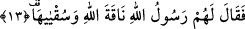

12. Onların en bedbahtı (deveyi kesmek için) atıldığında,
Yâni Semûd kavminin en bedbahtı olan Kudâr b. Sâlif kendisini deveye gönderen
kimselerin emrine uyarak ayağa kalktığı ve öne doğru atıldığında, demektir.
Keşfu’l-esrar’da der ki: “İnbiâs” bir sebebten dolayı itâate acele etmek/atılmak
demektir.
Ya da mânâ: Deveyi kesmek için Kudâr ve onunla beraber olan diğer bedbahtlar
ayağa kalkıp öne atıldıklarında, demektir. Çünkü Arapça’da ism-i tafdîl izâfet
yapıldığında bir kişi için olabileceği gibi çok kişi için de olabilir. Yine müzekker
olabileceği gibi müennes için de olabilir. Birincisine örnek Kamer sûresindeki
“Arkadaşlarını çağırdılar, o da (bundan cü’ret alarak) kılıcını kaptı ve deveyi kesti.”
(el-Kamer, 54/29) âyetidir. Bu âyet deveyi kesenin belli bir tek kişi olduğuna delâlet
etmektedir. O ve onunla birlikte bulunanların diğerlerinden daha fazla bedbaht olmaları,
-tümü devenin kesilmesine razı olmakta müşterek olsalar da- onların bizzat deveyi
kesmelerinden dolayıdır.
13. Allah’ın rasûlü onlara: “Allah’ın devesine ve onun su hakkına dokunmayın!”
dedi.
Yapmaya karar verdikleri fiili öğrenince “Allah’ın rasûlü onlara” Semûd’a
“Allah’ın devesine ve onun su hakkına” yâni su içme, sudan pay alma hakkına
“dokunmayın!” dedi.”
Burada Allah’ın rasûlünden maksad Sâlih (a.s.)’dır. O, Sâlih b. Ubeyd b. Câbir b.
Semûd b. Ûs/Avs b. İrem’dir. Sâlih (a.s.)’ın “Allah’ın rasûlü” unvanıyla ifâde edilmesi,
ona itâatın vacib olduğunu bildirmek, kavminin ne kadar isyan içinde olduklarını ve
azgınlıkta devam ettiklerini beyân etmek içindir.
Devenin “Allah’ın devesi” şeklinde Allah’a izâfe edilmesi “Beytullah/Allah’ın evi”
ifâdesinde olduğu gibi şereflendirmek içindir
Sâlih (a.s.) onlara şöyle demiştir: “Allah’ın vahdâniyyetine/birliğine, kudretinin
kemâline ve benim peygamber olduğuma delil olan Allah’ın devesini bırakın, onu sakın
kesmeyin.
“Sukyâhâ” devenin su hakkı, sudan nasibi demektir. Yani sırası geldiğinde deveyi
sudan kovmayın, demektir. Çünkü devenin belli bir gün su içme hakkı, Semûd kavminin
ve hayvanlarının da başka bir gün su alma hakları vardı. Onlar devenin sırasını kendi
hayvanları bakımından zararlı görüyorlardı. Bu yüzden deveyi kesmeye yöneldiler.